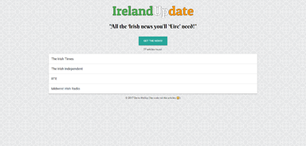
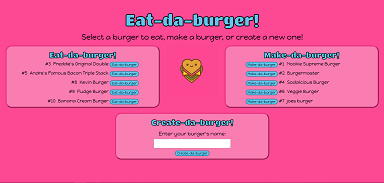
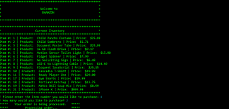
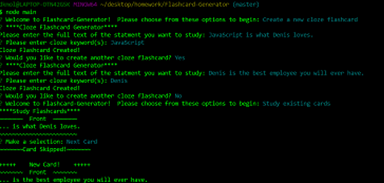
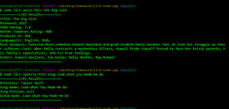
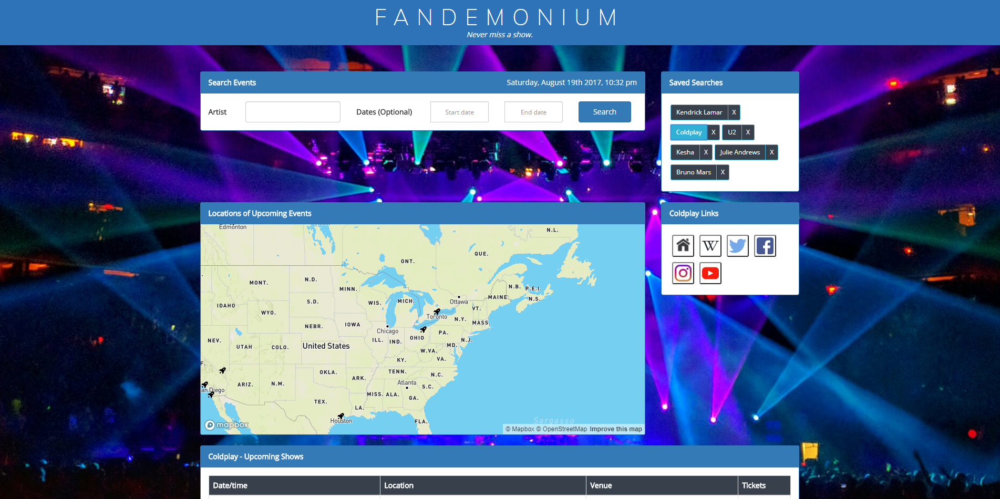
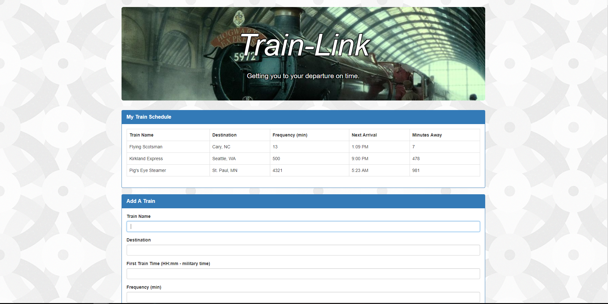
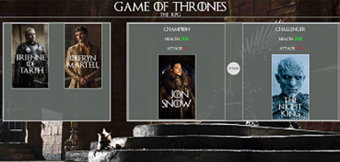
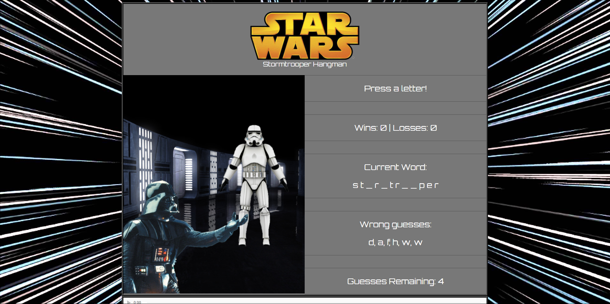

About Me
Thanks for stopping by my portfolio! My name is Denis Molloy and after nearly a decade in the fields of Product/Project Management, and Quality Assurance, I wanted to pivot careers to programming...specifically web development. After moving to Cary, NC last year I signed up for the Coding Boot Camp at UNC-Chapel Hill to achieve my new goal. Coding has quickly become a passion of mine; something that happily takes up all of my free time and in which I take great pride. I'll earn my Full-Stack Certification from UNC in December and look forward to contributing my skills and passion to a new team in the Triangle area as soon as possible.
Please take the time to checkout my projects below. If you like what you see, don't hesitate to get in touch with me via LinkedIn and feel free to download a copy of my resume here. Thanks for your time. Let's start creating together!
Projects
IrelandUpdate
Project #13
ViewIrelandUpdate
 HTML
HTML
 CSS
CSS
 JavaScript
JavaScript
 jQuery
jQuery
 Node.js
Node.js
 Express.js
Express.js
 Handlebars.js
Handlebars.js
 MongoDB
MongoDB
Objective: Create a full-stack site that scrapes news articles from a news outlet, store the data in a MongoDB, then populate the information on the front end of the site.
Result: How useful is a scraper that only scrapes info from one site? Why scrape one when you can scrape four?! Inspired by my Irish immigrant parents, I decided to make this project something that they would find useful as a way of saying thanks for being so incredible. The page scrapes their four favorite Irish news sites using axios, cheerio iterates through the HTML document grabbing the info needed and creating new objects for each article, then inserts the data into the MongoDB. A call to the /scrapes API route is then made to pull the data out of the DB and populate the DOM according to the article's source.
Eat-da-burger
Project #12
ViewEat-da-burger
HTML
CSS
JavaScript
jQuery
Node.js
Express.js
Handlebars.js
Objective: Create a full-stack site that allows users to 'Eat', 'Make', and 'Create' burgers. The site utilizes Node.js and Express.js, along with a MySQL database that store the burger data. Handlebars.js is used to template the HTML pages. The page is deployed via Heroku.
Result: Although this page looks relatively simple (but cute and fun!), it's packed with all the technologies I've learned up to this point in the course. Please use the links below to check it out.
FriendFinder
Project #11
ViewFriendFinder
HTML
CSS
JavaScript
jQuery
Node.js
Express.js
Objective: Create a full-stack site (utilizing Express to handle routing) that will take in results from a users survey, then compare the user's answers with those saved in the server. The app will then display the name and picture of the user with the best overall match. The site needs to be deployted via Heroku
Result: For my first full-stack project, I wanted to go all out and create a complete site that represented the culmination of my learning thus far. I truly enjoyed creating the site and showcasing my creative muscle both in the design of the layout and user experience, and also in the structure of my code. Give the site a try by clicking the [View Site] link below.
Bamazon
Project #10
ViewBamazon
JavaScript
Node.js
 MySQL
MySQL
Objective: Create an Amazon-like CLI storefront that stores inventory in a MySQL database, and has portals for both customers and managers.
Result: The customer portal (bamazonCustomer.js) allows customers to view items available for sale, choose the item and quanitiy they want to purchase, updates the database accordingly, and presents an order summary to the user. The manager portal (bamazonManager.js) allows manager to view all and low inventory items, along with functionality that allows them to add additional inventory and all new items to the DB. A demo of the CLI storfront in action can be viewed by clicking the [VIEW DEMO] link below.
Flashcard Generator
Project #9
ViewFlashcard Generator
JavaScript
Node.js
Objective: Using new knowledge of JavaScript Constuctors along with Node.js, create the backend for a basic flashcard application.
Result: Using Node.js and JavaScript Constructors, this app allows users to create and review flashcards (basic or cloze flashcards). The app can be cloned via the repository link below.
LIRI
Project #8
ViewLIRI
JavaScript
Node.js
Objective: Create a command line node app using Node.js and npm packages. The app is called LIRI (Language Interpretation and Recognition Interface...a take on Apple's SIRI) the takes in parameters from the command line and outputs specific data.
Result: This app uses Node.js and various NPM packages to make calls to the Spotify, Twitter, and OMDB APIs to return data on items specified in the command line. The app can be cloned from the repo link below, along with further instructions on how to use the app.
Fandemonium
Group Project #1
ViewFandemonium
HTML
CSS
 Bootstrap
JavaScript
jQuery
Bootstrap
JavaScript
jQuery
 Firebase
Firebase
Objective: Working with a group, incorporate all of the learning thus far in the course. Requirements: sites must use at least two APIs, AJAX to pull data from those APIs, at least one new library/technology not learned in class, a CSS Framework, use Firebase for data storage, user input validation, and a polished front end.
Result: As a part of a 3-person team, we came up with Fandemonium; a site for music fans that provides one-stop shop for all pertinent information regarding your favorite artists. You can search for your favorite artists and find links to their Wikipedia page and social media, along with (if available) an interactive map to all of their upcoming tour dates and links to purchase tickets. My conrtibutions included the final UI design, handling and validating user input (using JS/Moment.js, and the implementation of Bootbox.js for easy input error message modals), the AJAX calls to the MusicGraph API to get artist links and use that information to populate the Links panel, and CSS media queries to ensure the page looks/functions well on mobile devices.
Train-Link
Project #7
ViewTrain Scheduler
HTML
CSS
Bootstrap
JavaScript
jQuery
Firebase
Objective: Create a train schedule application that incorporates Firebase to host arrival and departure data. The app retrieves and manipulates this information with the Moment.js library. This website will provides up-to-date information about various trains, namely their arrival times and how many minutes remain until they arrive at the station.
Result: The completed site can be viewed by clicking the [VIEW PAGE] link below.
Politi-GIF

Project #6
ViewPoliti-GIF
HTML
CSS
JavaScript
jQuery
Objective: Using the Giphy API, create a dynamic site that makes an AJAX call to the Giphy API and returns an JSON object with URLs for the 10 most popular GIFs related to the submitted query. Users can submit their own queries, or they can select from an array of saved search terms (I chose politicians). Initially, screenshots of the GIFs are displayed. When clicked on the URL is changed to the GIF URL dynamically.
Result: Along with completing the homework, I also include CSS media queries to ensure the site looked and functioned well on mobile devices. The completed site can be viewed by clicking the [VIEW PAGE] link below.
NFL Trivia

Project #5
ViewNFL Trivia
HTML
CSS
JavaScript
jQuery
Objective: Create a trivia game using JavaScript logic and jQuery to manipulate HTML. The Basic assignment had all the questions on one static page, while the advanced page was dynamic; only showing one question at a time, informing the user if they got a question right/wrong, and displaying a timer countdown for each question. New knowledge implemented includes objects, and timer methods (setInterval, clearInterval, setTimeout).
Result: I did the advanced homework and created and NFL-themed trivia game. I'm particularly proud of the way the timer is styled :) The completed site can be viewed by clicking the [VIEW PAGE] link below.
Game of Thrones RPG
Project #4
ViewGame of Thrones RPG
HTML
CSS
JavaScript
jQuery
Objective: Create an interactive game where the contents of the page are dynamically updated using jQuery. The basic assignment was to create a simple number guessing game, while the advanced homework was an 'RPG' where characters fought against each other. Each character had to be able to beat all the other charcters based on the order of the opponent chosen.
Result: With "Game of Thrones" season 7 on the horizon, I thought it would be the perfect setting for the advanced homework. My goal (as with all my work) was to create an experience that engaged the user and kept them exploring the page, while learning and implementing everything I could in regards to HTML/CSS/JS and the newly learned jQuery. The completed site can be viewed by clicking the [VIEW PAGE] link below.
Star Wars Hangman
Project #3
ViewStar Wars Hangman
HTML
CSS
JavaScript
Objective: The first major assignment at the Coding Bootcamp @ UNC-Chapel Hill tasked us with either creating a basic 'Psychic' game (trying to guess a random letter chosen by the app) or I could choose to do the more advanced Hangman game.
Result: I chose the advanced homework with the goal of a creating a game that would engage the user and keep them on the page. The completed site can be viewed by clicking the [VIEW PAGE] link below.
Technologies